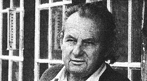

Peter's second sun-heated dwelling is a landmark in Santa Fe, New Mexico's Canyon Road district. The solar collectors (which were merely added onto an already existing adobe structure) are slanted to take maximum advantage of the winter sun. Air, heated by the sun in the panels, is vented by electric blowers to the floor of the building